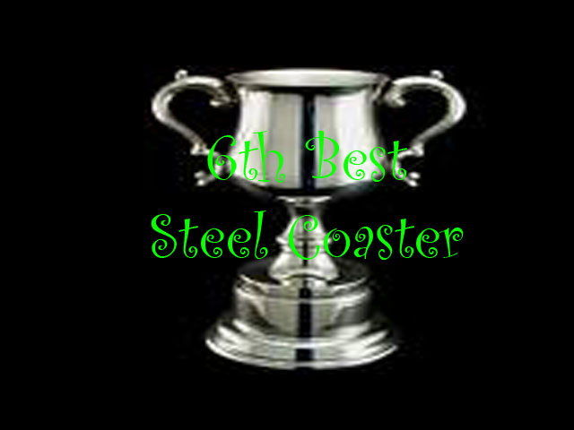
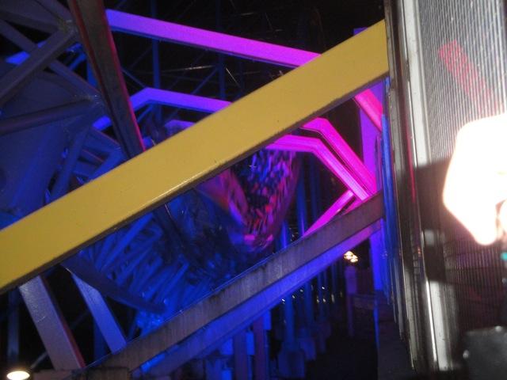
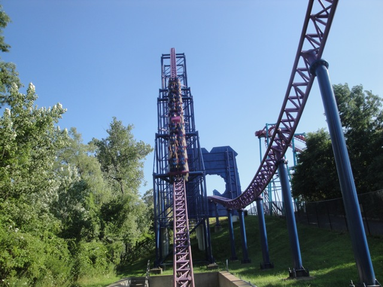

| |
Superman the Ride Review

Today at Incrediblecoasters, we're going to be reviewing Superman the Ride. The star attraction at Six Flags New England (unless it turns out that Wicked Cyclone is better) and one of the best roller coasters on the planet. Yes, this ride is actually one of the best coasters on the planet. It is that good. Now for a little bit of history on the ride, it originally opened up as Superman: Ride of Steel back in 2000. However, back in 2009, after the amazing success of turning X into X2, they decided to give more rides makeovers, such as Superman the Ride, turning it into Bizarro. But then in 2016, they decided to switch it back to the original Superman. Partially to add some stupid VR *groan*, but I think that's gone now. And hey. It's still a great ride. Oh, and the reason all the photos show it as Bizarro is because that's what it was when I rode it. Anyways, let's get riding. We pull down the extra thick lap bars (they modified them after the accident) and we're off. Climbing up the lifthill, we get a nice view of Six Flags New England to our right, and Conneticuit to our left. Soon enough, we're at the top and we are about to go down!!! And yeah, its a really nice first drop. You just get all this speed just RUSHING towards you. Not to mention a nice little pop of ejector air if you're sitting in the back seat. At this point, we've reached the bottom of the first drop and "TAKE THE TUNNEL!!!!" It's got a nice cardboard cut-out of Superman cause yeah. This is a quality themed ride. But really, it's not about the theming on this ride, it's about the INSANE forces. We then rush out of the tunnel and into a nice airtime hill. This hill provides us with some nice sustained floater air that I must admit, its really nice. We then drop back down and head into the overbanked turn. And unlike on rides like Millenium Force and Xcelerator where the overbanks are just cruiser elements, this overbanked turn DOES stuff. And it WHIPS you. You get some really nice laterals right there. We then go through a couple of S Turns and a small dip. And all throughout this part of the ride, there are fake buildings and more cardboard cut outs. It's not Disney quality or anything, but it's still all right. It's kind of like a kindergardeners sh*tty macaroni art. It sucks, but they at least put effort in where you just want to pat them on the head and say "Good job for trying". We then rise up into another airtime hill and man, this one is strong. But we're just coming up to the best part of the ride. We head up into another airtime hill, and though Superman gets wide praise from nearly all enthusiasts, I don't think this particular hill is talked about enough. I like to call it, The "It Happens" Hill. Because no matter where you're sitting, it just happens. Some of the strongest airtime on any roller coaster and my absolute favorite part of Superman. After that ejector air insanity, we then head through a semi-tunnel with some cool headchoppers through those Superman Logos. We head up through another hill, which has some airtime, but not nearly as good as the "It Happens" hill. However, if you want variety in your ride (and trust me, I'm a man of variety), the ride then goes down this long windy drop that just PINS you to the side as you get a TON of laterals before heading up into another bunny hop. BOOM!!! Ejector air. But Superman knows how good those last laterals were and takes you through a wild helix that literally just pins you to the side. You're like a rag doll, feeling like you're just gonna fall out. And this is why I love Superman so much, especially in it's 2nd half. It mixes things up, acts agressive, and isn't afraid to f*ck you over. =) We then head up into a bunny hop with some crazy ejector air before diving into that tunnel as you wave to all the enthusiasts getting that common shot. We rise out of that tunnel and for those of you who want that sweet ejector air and have had it up to here with laterals, well you're in luck. Cause this is where the ride just decides to really throw your ass out of the seat (aside from the "It Happens" hill). Three beautiful airtime hills. Ass goes out of seat. Ass falls back into seat. Ass goes out of seat. Ass falls back into seat. Ass goes out of seat. Ass falls back into seat. We then make a sharp turn into the brake run. And there you have it. One of the best coasters in America, if not the world. And all its praise is widely deserved. Not only is the airtime absolutely sick, but its laterals in the 2nd half are just as good, pinning to the side planting a smile on your face. I know some people complain about how the new lap bars are much worse than the original. I may not have ridden the original Superman: Ride of Steel with its original restraints, but I have ridden other Intamin Coasters with the T Bar, and yeah. Those restraints are better, but these lap bars are still tolerable and Superman continues to kick ass and shine through them. You have to ride this if you're at Six Flags New England any time soon. You'll love this ride. I guarantee it.
10/10
Location: Six Flags New England
Superman the Ride opened as Superman: Ride of Steel in 2000
It was rethemed as Bizarro in 2009
It went back to being Superman in 2016
Built by: Intamin
Last Ridden: July 30, 2011
Here's my raw footage video of Superman the Ride (Back when it was Bizarro).

Superman the Ride Photos





Home
|